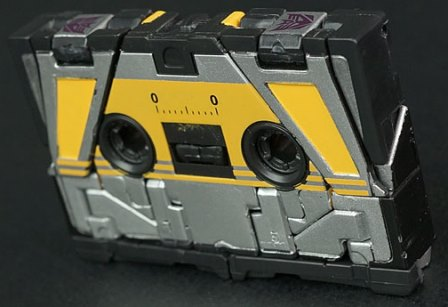 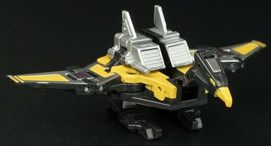
Difficulty of Transformation : Easy
Color Scheme : Black, orangish yellow, silver, and some pale yellow
Individual Rating : 9.0
Set Price
: $120 (U.S.)
Allegiances
: Decepticon
 Buzzsaw
Buzzsaw
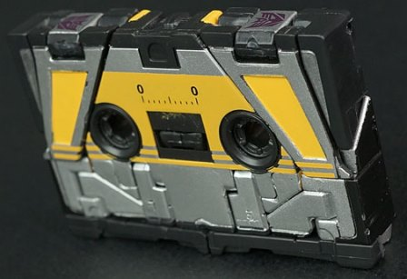
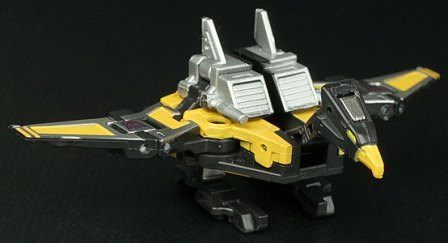
Difficulty of Transformation
: Easy
Color Scheme
: Black, orangish yellow,
silver, and some pale yellow
Individual Rating
: 9.0
Buzzsaw's cassette mode
is... er... a cassette. What's neat is that-- like the other Masterpiece
cassettes in this set-- he's the exact size in this mode of the G1 cassettes,
so you can store him accurately in
G1 Soundwave's
chest cavity as well, if you so desire. From the front, if you ignore all
the breaks in the plastic that pretty much have to be there because of
the transformation (Buzzsaw isn't a solid block, after all), he looks fairly
convincing. Like a mini-cassette, he's got the fake tape reels, the fake
"window" in the center of the cassette, and some nice orangish-yellow paint
apps on the bottom half of the front of this mode, which helps to differentiate
him from his other Decepticon cassette brethren. The horizontal stripes
near the center are similar to Soundwave's other MP minions, and help to
tie him in thematically with his fellow Cassetteicons, as well. There's
also a generous amount of silver paint on the front, and both of these
colors go together very well with Buzzsaw's main plastic color of black.
From the backside, this mode is definitely less impressive, with parts
of his bird mode (his bird neck and head, in particular) quite obvious--
though they don't actually stick out from the rectangular shape of the
cassette, so that's always good. Like with the rest of Soundwave's MP cassettes,
Buzzsaw comes with a clear plastic holder for storage when he's not in
Soundwave's chest in this mode.
Buzzsaw's transformation
to bird mode is mostly unfolding his cassette mode (it's a bit tricky getting
his bird head out of its alcove without some good fingernails or some kind
of leverage tool), but the results are quite impressive, especially when
compared to the G1 toy-- he's not very two-dimensional this time around,
and I LOVE that his two intakes/rear wings are actually part of the core
toy, and aren't accessories you plug in here that have no place in his
cassette mode, which was an issue with the G1 toy. The feet are a bit overly
long, but other than that proportionally Buzzsaw looks great, with his
triangular wingspan, general body shape, and especially headsculpt all
looking like he leapt right out of the G1 cartoon. His beak and eyes are
detailed with a bit of appropriate yellow, while the black plastic on his
body and wings is pretty much covered in either silver or orangish yellow
paint, so this guy certainly isn't wanting for paint. What's even better,
Buzzsaw has some pretty good articulation for a cassette-bird-- he can
move back-and-forth where the wings meet the body, down a bit to "flap"
at the mid-section on each wing, and up-and-down at two points on the neck.
His rear wings can also move up and down slightly, and his legs can move
back-and-forth at the hips and rotate at the ankles. Again, for such a
small little bird-dude, this is DARNED impressive. Masterpiece, indeed!
A little tiny feature that's really nice is that a tiny little camera can
fold out of Buzzsaw's tiny little bird head-- just like how Laserbeak famously
recorded Optimus Prime and Co. in the opening scenes of the G1 animated
movie! Now THAT'S going above and beyond the call of duty.
 Frenzy
Frenzy
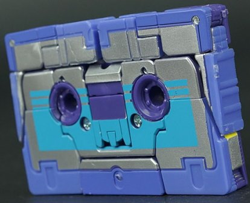
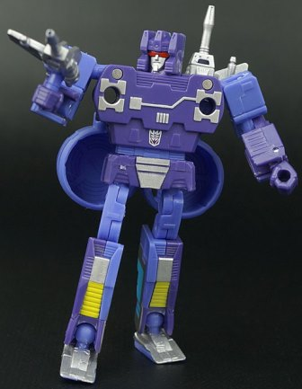
Difficulty of Transformation
: Easy
Color Scheme
: Dark dull bluish purple,
silver, periwinkle, and some light blue, yellow, and metallic red
Individual Rating
: 9.2
Frenzy's cassette mode
is quite solid-looking-- at least for a transforming box. Other than the
required "cracks" in the front, he looks pretty solid on the front face,
and other than a couple of ball joints, his sides look pretty good, too.
On the back side, Frenzy looks a bit weaker, with the top center pieces
a perwinkle color while the rest of the back abruptly changes to a dark
dull bluish purple-- plus, the robot chest details are pretty obvious on
the back, what with the chrome silver and all. As far as colors go, Frenzy
has really nice variant shades of his usual colors-- the periwinkle in
particular is just a wonderful color, and complements the dull bluish purple
(which is more evident in robot mode) very well. The silver paint on the
front of this mode helps Frenzy fit in with his other MP minions, along
with the light blue horizontal stripes, which complement Frenzy's dominant
colors as well.
Frenzy's transformation
mostly involves folding out his appendages, though a few extra little bits
like an extra swivel for the hips so they don't sit "outwards" from the
waist, and a slight extending of the waist, are quite appreciated for a
small TF like this. Frenzy's robot mode is practically flawless, and about
as accurate to the G1 cartoon model as you could possibly expect. His arms,
head, and chest are all perfectly proportioned and sculpted, with some
nice silver paint chest details. His upper legs are just a TOUCH skinny,
along with his flat feet, but this is being REALLY nitpicky-- I don't see
how the designers could've gotten around this with a cassette-former. A
few extra accent colors make themselves known in this mode, too-- the yellow
on the lower legs and a really nice shade of metallic red on Frenzy's visor
help to tie all of his colors together, along with providing a bit of contrast
against Frenzy's otherwise "cool" color scheme. Frenzy's articulation is
absolutely fantastic, particularly for such a small toy-- he can move at
the neck (at two points), shoulders (at two points), elbows, slightly inwards
at the wrists, and at the hips (at two points), knees (at two points),
and ankles. Many of the major points have ball joints, so combined with
Frenzy's excellent balance, you can get him into a nuts number of poses.
Frenzy's small fin-guns can either store in his hand-holes or on his upper
back (they plug into the "reel holes" in the cassette-chest). The larger
"piledriver" accessories can be placed around Frenzy's lower arms if you
position them in a specific "L" shape-- and yes, the piledrivers do actually
move up and down. They "click" together quite solidly to the arms as well,
but not SO solidly you can't get the piledriver pieces off without too
much force. He looks great with them on-- and he can store either the entire
pistons behind his back when not in use or just the pistons "caps" on the
pistons on his butt, though the latter looks pretty weird and the former
is pretty clunky.
 Laserbeak
Laserbeak
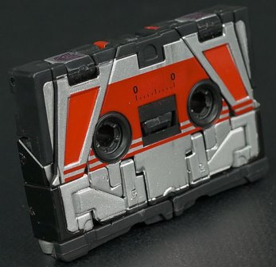
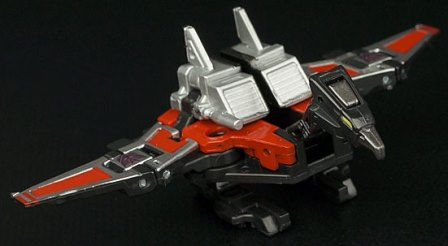
Difficulty of Transformation
: Easy
Color Scheme
: Black, moderately
dark red, silver, and some pale yellow and metallic gunmetal gray
Individual Rating
: 9.2
Laserbeak's coloration--
as is the case with the G1 toy-- is very similar to Buzzsaw's overall coloration
and paint apps. The main difference here is that Buzzsaw's orangish yellow
has all been replaced with red on Laserbeak, including the stripes on the
front of the cassette mode (the yellow on the bird eyes is still there).
In addition, the beak is painted a metallic gunmetal gray on Laserbeak,
to make his bird head look a bit different. Both changes are positive,
in my opinion; although I liked the way it was used on Buzzsaw, I'm generally
not a fan of yellow, and to me the red goes with the silver and black better.
The gunmetal gray beak also makes Laserbeak look like he has an actual
metal beak, which doesn't come across on Buzzsaw, and I like the former
better.
No mold changes have
been made to MP Laserbeak when compared to MP Buzzsaw.
 Ravage
Ravage
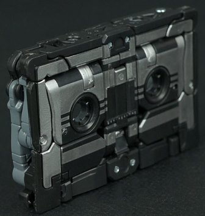
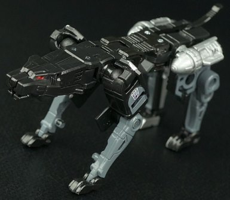
Difficulty of Transformation
: Medium
Color Scheme
: Black, silver, moderately
dark gray, and some dark red
Individual Rating
: 8.5
Ravage's cassette mode
looks fairly solid from the front-- at least for the most part. The silver
paint detailing marks him a bit differently from the other MP Cassetteicons,
as there's less emphasis on the stripes, and the only color is silver,
which admittedly doesn't make him strike the eye in the same way as his
buddies' cassette modes. The top section is the weak part of this mode--
it's clearly Ravage's head split lengthwise down the middle and is thus
hollow, and with no paint on the outside of these head-halves on the top,
it "pushes" the paint detailing down on the mode a bit, sort of like the
detailing isn't quite "lined up" with the cassette itself. The legs and
paws are also fairly obvious from the sides of this mode, and the back
doesn't look remotely like a cassette-- between the obvious folded-up legs
and missile pods, you can almost figure out Ravage's transformation just
by looking back there, honestly.
Ravage's beast mode
is fantastic-looking, and definitely the best-looking "Deployer/Minion"
toy of him I've seen to date (5/16). He's a bit overly angular here and
there, and the curvature of his chest/stomach is basically non-existent,
with his body being a straight rectangle of plastic. There's also a few
minor flaps on the inside of his lower legs, around the knees. That's it,
though; otherwise his proportions are roughly spot-on perfect, with excellent
mold detailing where needed (like on his face and missile pods). The silver
pods, gray paint on his legs, and red eyes keep him from being all-black
in coloration as well-- that said, color-wise he's still definitely the
most boring 'bot out of this bunch. Ravage's articulation is fantastic--
he can move at the front legs, front knees (at two points), at the base
of each paw, at the back legs (at two points), back knees (at two points),
and at the base of his tail (it's a bit stubby, but it serves its purpose).
In an especially impressive addition, his neck can actually move downwards
at its base where it meets the body, to allow Ravage to "sniff out" a scent
trail-- that definitely was a cool surprise for me!
 Rumble
Rumble
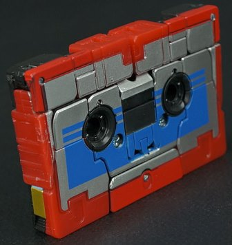
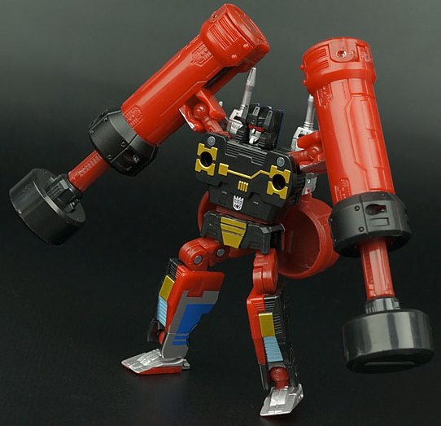
Difficulty of Transformation
: Easy
Color Scheme
: Black, moderately
dark red, silver, and some metallic gold, moderately dark blue, light pale
blue, and metallic red
Individual Rating
: 8.9
Rumble's the more "warm-colored"
of Soundwave's two humanoid Cassetteicons (well, at least according to
the packaging-- Rumble/Frenzy debates will never be resolved, people).
He has a bit more traditional of a color scheme when compared to Frenzy,
with black and a fairly primary shade of red being his major colors. They
contrast against each other excellently-- it's not exactly original, but
it doesn't have to be. What I'm not fond of, though, is how his cassette
mode looks red from the front but black from the back-- that's a bit of
an odd discrepancy, there. He has the same solid block of silver on the
front of his cassette mode that Soundwave's other MP minions do, though,
and the moderately dark blue stripe pattern helps him fit in with his brethren
even more while also contrasting well against the silver. In robot mode,
a few bits of gold make themselves known along with a few patches of a
very nice shade of light blue on his legs, and both contrast very well
against the black. His piledrivers are primarily red, though, which can
switch the color balance in this mode if you attach them. His feet, mouth,
and guns are painted silver, and his visor a metallic red--- all just like
his "brother" Frenzy. It all looks great, but I personally prefer color
schemes that are less "primary" in their tones, and thus Frenzy one-ups
this version of the mold in terms of color scheme, in my view.
No mold changes have
been made to MP Rumble when compared to MP Frenzy.
 Soundwave
Soundwave
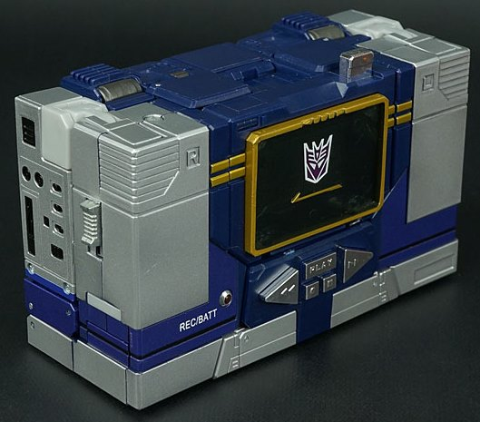
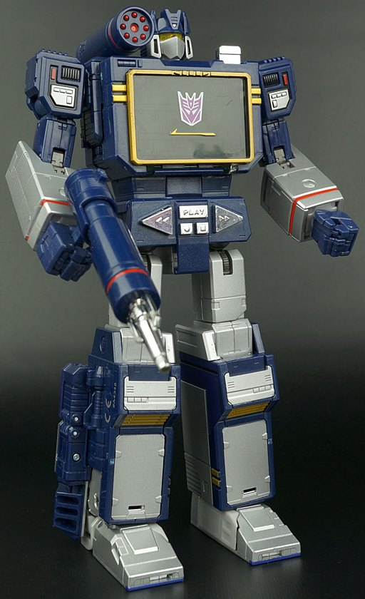
Difficulty of Transformation
: Hard
Color Scheme
: Silver, dark blue,
metallic moderately dark blue, and some clear plastic, chrome silver, metallic
gold, light red, milky light gray, charcoal black, and transparent yellow
Individual Rating
: 9.7
Soundwave's alternate
mode-- as you'd expect for a Masterpiece G1 update-- is a microcassette
player, and is sized roughly appropriately, as well. The proportions are
nigh-on perfect-- this is certainly one solid box. There's a couple of
small issues if you look at this mode from the back side-- Soundwave's
weapons are a tad obvious, as are the arms, with a small gap in the box
structure on the bottom middle of the back side. This still all fits in
with the overall silhouette of the toy, though, and are minor at best.
It's quite impressive just how many mold details there are in this mode
to make it look more like a real microcassette recorder-- a REC/BATT "light";
Play/Rewind etc. buttons that you can actually press in; a dial on his
right side that can be rotated; a slider on his left side that can be...
well... slid; and plenty of black-painted details on the sides that look
like buttons, slots for headphone jacks and memory cards, and the like.
The color scheme is classic Soundwave, but done very well-- there is SOME
ugly light milky gray plastic and plain charcoal black, but these are only
used on a small few connector parts that couldn't be painted because of
the nylon material. These barely make a mark on the overall color scheme,
which is mostly either painted silver or a really nice shade of swirly
dark blue. There's also some gold lining on his front and robot knees,
which contrasts excellently with both the blue and the silver, and appropriately
clear plastic for his center/chest. There's also a bit of light red detailing
visible in robot mode, to give him another accent color to work with. A
few parts are also chrome silver like on the G1 toy; another bit of a nice
throwback. The only thing I'm not COMPLETELY crazy about is that the metallic
dark blue-- used on some parts of the front of his cassette mode that I
guess had to be painted-- are just a shade or two lighter than his dark
blue plastic, but it's no big deal. Of course, it wouldn't be Soundwave
if he couldn't fit some of his cassette buddies inside him-- and indeed,
he can fit 2 inside his center at a time, with the silver button on the
top opening up the door if you press down on it (no auto-ejecting, sorry).
Soundwave's transformation
is like a more complex version of his G1 transforation, with the same parts
on the G1 toy's cassette mode becoming the same parts on this Masterpiece
version. The difference here is a couple of extra steps, like the ingenious
folding of his chrome buttons downwards to give him an identifiable stomach,
the auto-extending of the legs, and some of the extra little bits that
made him look completely rectangular in cassette player mode collapsing
against his lower legs in a rather ingenious way. (Although it's done in
a neat way, this is my only real complaint with Soundwave here in terms
of kibble-- they definitely stick out from the sides of his lower legs
a little.) Proportionally wise, Soundwave is absolutely PERFECT-- his arms,
chest, legs, all of it in perfect G1 cartoon proportion to each other.
(He's roughly as tall as
MP Optimus Prime 2.0
,
if you're wondering about the size, though he's not quite as heavy.) It's
quite a feat of engineering, and all the necessary mold detailing that
was on the G1 toy is here-- along with a few extra little robot details
molded in-- and I just love it. Soundwave's headsculpt is also spot-on,
though it uses the less-used transparent yellow color for his optic visor
instead of the usual red. His shoulder missile launcher also simply rotates
around in place, instead of separating from the battery compartment and
re-plugging into his shoulder-- this allows it to aim up and to the sides,
something that's always appreciated. Soundwave is also extremely articulated--
he can move at the neck (at two points), at the shoulder missile launcher
(at three points), the shoulders (at four points), elbows (at two points),
at the base and mid-point of each index finger, at the base of his other
three fingers on each hand (all molded as one piece), as well as rotation
at the wrists and waist and movement at the hips (at three points), knees
(at three points), and ankles (at four points). Given how well-distributed
his weight is, and that his feet are made of diecast for better stability,
this means he can get into an insane number of poses and look good doing
it. (And yes, he can press his own eject button with his index finger.)
Soundwave has a fair number of accessories and small features as well,
as you'd expect from a Masterpiece toy. In addition to the elongated "battery
gun" that he can hold in either of his hands, he also has a "scanning grid"
plate that can fit over his chest-- or, if you prefer, a clear "Energon
cube" that can be attached to said chest, calling back to him making clear
Energon cubes to be filled in the G1 cartoon. (The Energon cube does have
a top, if you want to display it by itself and not connected to anything.)
Soundwave also comes with a Megatron-in-gun-mode accessory that he can
hold in his hands (albeit a bit loosely), and the extra pieces like the
extended barrel and sniper scope on the gun can be removed if you do desire.
He has a "soundblaster" weapon that can attach in place of either of his
hands (you fold in the hands and there's some tabs revealed to stick it
on there). When not in use, this weapon can be stored in a slot in his
butt. (Hey, at least it can store
somewhere
.) In addition, there's
small clear tabs on the sides of Soundwave's lower arms that can hold either
Rumble or Frenzy's piledrivers (though they look too small compared to
Soundwave), or-- even better-- have Laserbeak or Buzzsaw slot into and
perch on said lower arms.
The Masterpiece Soundwave set is one of the easiest recommendations I can make to anyone remotely interested in Masterpiece toys and/or Soundwave. Every toy in this multi-pack-- be it Soundwave or his much-smaller minions-- is a very well-engineered toy, with tons of paint and very faithful to their G1 cartoon models while also having some cool extras like extra guns and piledrivers for Rumble and Frenzy. The only real downside here is that each toy has a mode that's basically a box and not all that fun to play with by itself, but it's certainly keeping in with the source material. And all of this at $120 U.S.? This is one of the most reasonably priced Masterpieces released in the U.S. Get it!
(Pictures by Seibertron .)
Reviews by Beastbot